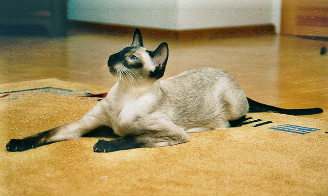

Kot Syjamski
Pochodzenie
Koty syjamskie należą do najstarszych kocich ras. Za ich ojczyznę uznaje się Tajlandię, którą niegdyś zwano Syjamem – stąd nazwa rasy.
Charakter i zachowanie
Syjamy lubią przynależeć do grupy i zawsze znajdować się w centrum wydarzeń, a przede wszystkim przebywać blisko swoich ukochanych opiekunów i towarzyszyć im we wszystkich czynnościach. Koty syjamskie słyną ze swego temperamentu. To niezwykle aktywne koty, które wydają się nie znosić nudy. Uchodzą przy tym za jedną z najbardziej inteligentnych kocich ras i – co jest nie jest powszechną cechą naszych futrzaków – chętnie uczą się różnych wykonywania różnych sztuczek na polecenie opiekuna.
Pielęgnacja
Pielęgnacja kota syjamskiego jest wyjątkowo łatwa. Kotów tych nie trzeba ani kąpać, ani często czesać. Raz na jakiś czas wystarczy ich krótkie futro oczyścić ściereczką nasączoną płynem do czyszczenia dla kotów, a okresach linienia przeczesywać miękką szczotką włosianą lub gąbkowym zgrzebłem.